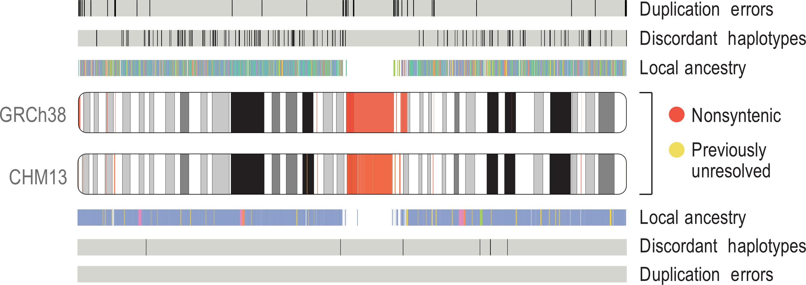
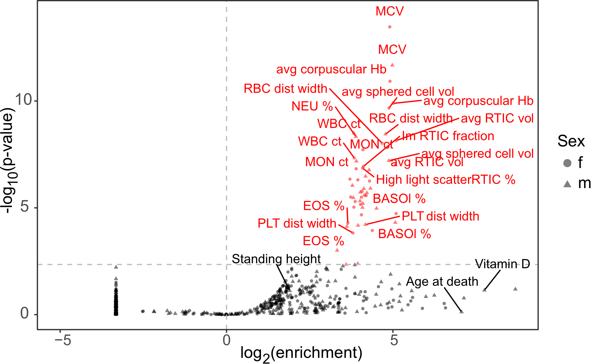

Investigating functional genetic variation
in diverse human populations.
I am a Ph.D. candidate in the Cell, Molecular, Developmental Biology and Biophysics (CMDB) program at Johns Hopkins University, advised by Dr. Rajiv McCoy. My research focuses on generating large, globally diverse human transcriptomics datasets, and developing computational and statistical methods that use these datasets to investigate genetic variation underlying gene expression and splicing differences between individuals. Through functional annotation of this variation, we can uncover the molecular mechansims by which genetic variation drives human traits and disease.
I obtained my B.S. in Biology from the University of Maryland, College Park. There, I worked with Dr. Mihai Pop to develop computational tools for high-resolution metagenomic profiling assays.
Research Projects
Characterizing a complete human reference genome
Comparison of chr1 assembly between GRCh38 and T2T-CHM13. Adapted from
The first human genome sequence—completed in 2003 as part of the Human Genome Project—covered 92% of the full genome. That last 8% (almost 200 million bases)—largely comprised of difficult-to-resolve repetitive sequences—eluded scientists for nearly two decades. However, in 2021 the Telomere-to-Telomere (T2T) Consortium finally assembled a 100% complete human genome (T2T-CHM13), using long-read technologies to fill in the missing gaps and correct errors in the previous assembly.
As a member of this consortium, I helped characterize the utility of using this assembly as a reference for analysis of human genetic variation. In addition to characterizing variation in previously-unresolved regions of the genome, I also facilitated the transition from the current widely used human reference genome (GRCh38) to the new T2T-CHM13 assembly by lifting over catalogs of human genetic variation (over 700 million distinct genetic variants)—to the new reference.
Recently, the T2T Consortium finished our assembly of a human Y chromosome, completing the T2T-CHM13v2.0 reference genome. This assembly adds 30 million bases of new sequence (over 50% of the chromosome!) and corrects errors in the previous assembly. Building on my work with the T2T-CHM13v1.0 assembly, I led an analysis of short-read alignment and variant calling using this new assembly, characterizing the improvements offered relative to the previous reference.
Relevant publications
* denotes co-first authorship
Exploring human regulatory sequences
Enrichment of blood-derived cCREs in heritability of blood-related traits. Blood-related traits in red, non-blood-related traits in black. Adapted from
The vast majority of huamn trait-associated genetic variation lies in non-coding regions of the genome. Additionally, genetic variation affecting gene expression and alternative splicing has been shown to be a major contributor of human traits and disease. Unfortunately, the molecular mechanisms by which trait-associated non-coding variation drive phenotypic differences between individuals are still not well-characterized.
The VISION project uses massive epigenomic datasets from hematopoetic cells lines to characterize and validate regulatory sequences in the human and mouse genomes, and to build better models of gene expression and regulation. As part of an effort to identify candidate cis-regulatory elements (cCREs) using cross-species epigenomic data, I worked with fellow Ph.D. student Kate Weaver to explore the enrichment of the identified cCREs in heritability of human blood-related traits. Validating their characterization, we find that the identified cCREs are significantly enriched in and highly specific to human blood cell phenotypes.
In my own work, I am discovering and characterizing gene expression- and splicing-associated variation in globally diverse human cohorts. Previous molecular association studies have predominantly been restricted to individuals of European ancestries, with limited representation from other global populations. This diminishes the generalizability of results, raises ethical concerns about the distribution of research benefits, and hinders understanding of the diversity and evolution of gene expression across human populations. By exploring functional genetic variation in diverse cohorts, we hope to expand understanding of gene expression diversity across human populations.
Relevant publications
For a full list of publications, please see my CV below.
Honors and Awards
NIH Ruth L. Kirschstein National Research Service Award/F31 Fellowship (2023)
The Ruth L. Kirschstein National Research Service Award (NRSA) Individual Predoctoral Fellowship award funds promising predoctoral students, enabling them to obtain individualized, mentored research training from outstanding faculty sponsors while conducting dissertation research in scientific health-related fields relevant to the missions of the participating NIH Institutes and Centers.
I was awarded an F31 Fellowship from the National Human Genome Research Institute (NHGRI) for my proposed work uncovering sources of human gene expression variation in a globally diverse cohort.
Adapted from grants.nih.gov
NSF Graduate Research Fellowship Program - Honorable Mention (2021)
The National Science Foundation (NSF) Graduate Research Fellowship Program provides Fellowships to individuals selected early in their graduate careers based on their demonstrated potential for significant achievements in science and engineering. The NSF accords Honorable Mention to meritorious applicants who do not receive Fellowship awards. This is considered a significant national academic achievement and provides access to cyberinfrastructure resources through the Extreme Science and Engineering Discovery Environment (XSEDE).
Adapted from nsf.gov
JHU Center for Teaching Excellence and Innovation Instructional Enhancement Grant (2021)
The Instructional Enhancement Grant Program is a mini-grant initiative that enables faculty to partner with technology savvy students to develop resources that enhance pedagogy, increase or facilitate access to course content, encourage active learning, promote critical thinking, and support student collaboration.
Adapted from ctei.jhu.edu
JHU Department of Biology Victor G. Corces Teaching Award (2021)
The Victor G. Corces Teaching Award recognizes a graduate Teaching Assistant in the Department of Biology for their outstanding efforts, enduring devotion to their students, and excellence in education in the biological sciences. This is a funded award.
Student Speaker for Univeristy of Maryland CMNS Commencement (2018)
I was selected as the Student Commencement Speaker for the University of Maryland College of Computer, Mathematical, and Natural Sciences (CMNS) Winter 2018 graduation ceremony.
For a full list of awards, please see my CV below.
Teaching
Quantitative Biology
Since 2020, I have served as a teaching assistant for the CMDB program's one-week Quantitative Biology Bootcamp. The course is taken by all first-year Ph.D. students in the CMDB program and is designed to introduce biology students with little to no computational experience to the basics of computational biology. Students learn basic Python and Bash, and apply these languages to carry out simple analyses on biological data.
These concepts are built on in a year-long Quantitative Biology Lab course, for which I also serve as a teaching assistant. Using the skills they learned in the bootcamp, students develop their own implementations of widely-used computational biology tools. These projects range from genome assembly, to sequence alignment and GWAS.
In addition to serving as a teaching assistant for the Quantitative Biology lab course, I also developed and teach a guest lecture for the course. My lecture covers local and global sequence alignment, introduces students to tools in use in the field today, and leads students in developing their own implementation of the Needleman-Wunsch dynamic programming algorithm for global sequence alignment. This lecture has been listed as one of the student's favorite lectures in anonymous reviews each year it has been taught.
Additionally, I've served as a guest lecturer for Cold Spring Harbor Laboratory's "Advanced sequencing technologies and bioinformatics analysis" course, which explores the use and applications of massively parallel sequencing technologies, with a focus on data analysis and bioinformatics, including variant calling, transcriptome analysis, single cell analysis, metagenomics, and epigenomics.
Developmental Genetics
During the 2020-2021 school year, I served as a teaching assistant for the undergraduate Developmental Genetics Lab course. This course covers the basics of C. elegans development and introduces students to genetic modification using the CRISPR/Cas9 system. As part of the lab, students use CRISPR to add a fluorescent tag to a protein of interest, allowing them to track this protein over the course of C. elegans development. A large portion of this course focuses on properly designing the genetic constructs necessary to carry out their specific CRISPR modification.
Designing CRISPR reagents requires analysis of DNA sequences and extraction of specific strings of bases, and therefore lends itself to teaching students basic string manipulation skills. Sara Carioscia (a fellow TA) and I were awarded a Instructional Enhancement Grant Program Fellowship by the Johns Hopkins University Center for Teaching Excellence and Innovation to design a module for the Developmental Genetics course that guides students through a computational tool for CRISPR reagent design. The module covers the basics of Python and string manipulation and then has students use these skills to build a full CRISPR reagent design tool from scratch. This module allows us to introduce computational biology to undergraduate students that may not have had previous exposure, and gives them the chance to use what they’ve learned to build a computational tool that they can use in their own research. The module, in its current state, is publicly available through my GitHub.
Academic Service
HMM Workshop with Agara Bio
In the Fall of 2020 and Spring of 2021, I worked with Sara Carioscia to develop a computational biology workshop for Agara Bio, an undergraduate-driven community lab at JHU. We offered a two-part workshop covering Hidden Markov Models (HMMs), and led attendees in building their own gene-finding HMM in Jupyter Notebooks.
CMDB BioReps
The BioReps are student-elected representatives within the CMDB program that act as liasons between their graduate cohort, and the program directors and administration. We meet regularly with our cohorts, host monthly town halls, and are also involved in organizing the recruitment event for prospective students.
Curriculum Vitae
You can download my current CV here.
If you'd like to contact me, feel free to reach out via twitter or email using the links provided at the bottom of the navigation pane.